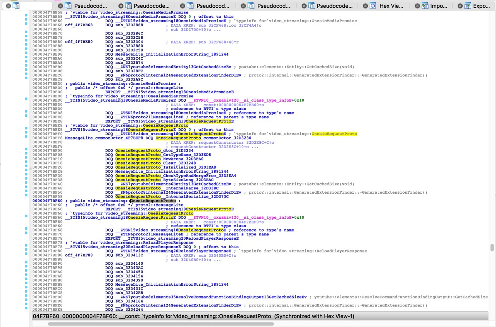

OnesieRequestProto
TODO：
- 【未解决】研究YouTube逻辑：lite版protobuf类OnesieRequestProto如何搞清楚属性字段定义
- 【未解决】研究YouTube逻辑：OnesieRequestProto相关
OnesieRequestProto的vtable定义
经过逆向，目前的理解是：
IDA中改名：

核心定义：
000004F7BEE8 ; `vtable for'video_streaming::OnesieRequestProto
__const:0000000004F7BEE8 __ZTVN15video_streaming18OnesieRequestProtoE DCQ 0 ; offset to this
__const:0000000004F7BEF0 DCQ __ZTIN15video_streaming18OnesieRequestProtoE ; `typeinfo for'video_streaming::OnesieRequestProto
__const:0000000004F7BEF8 MessageLite_commonDctor_4F7BEF8 DCQ OnesieRequestProto_commonDctor_32D3230
__const:0000000004F7BEF8 ; DATA XREF: requestConstructor_32D2E8C+C↑o
__const:0000000004F7BEF8 ; requestConstructor_32D2E8C+10↑o ...
__const:0000000004F7BF00 DCQ OnesieRequestProto_dtor_32D3234
__const:0000000004F7BF08 DCQ OnesieRequestProto_GetTypeName_32D3ED8
__const:0000000004F7BF10 DCQ OnesieRequestProto_NewArena_32D3FA0
__const:0000000004F7BF18 DCQ OnesieRequestProto_Clear_32D3248
__const:0000000004F7BF20 DCQ OnesieRequestProto_IsInitialized_32D3EA8
__const:0000000004F7BF28 DCQ MessageLite_InitializationErrorString_3891244
__const:0000000004F7BF30 DCQ OnesieRequestProto_CheckTypeAndMergeFrom_32D3EA4
__const:0000000004F7BF38 DCQ OnesieRequestProto_ByteSizeLong_32D3BAC
__const:0000000004F7BF40 DCQ __ZNK7youtube8elements6Entity13GetCachedSizeEv ; youtube::elements::Entity::GetCachedSize(void)
__const:0000000004F7BF48 DCQ OnesieRequestProto__InternalParse_32D338C
__const:0000000004F7BF50 DCQ __ZN6proto28internal24GeneratedExtensionFinderD1Ev ; proto2::internal::GeneratedExtensionFinder::~GeneratedExtensionFinder()
__const:0000000004F7BF58 DCQ OnesieRequestProto__InternalSerialize_32D373C
__const:0000000004F7BF60 ; public video_streaming::OnesieRequestProto :
OnesieRequestProto的vtable定义：
- vtable OnesieRequestProto
+0x08=OnesieRequestProto typeinfo+0x10=MessageLite_commonDctor_4F7BEF8=OnesieRequestProto_commonDctor_32D3230- 某种 deconstructor ？
+0x18=OnesieRequestProto_dtor_32D3234- virtual ~MessageLite() = default;
+0x20=OnesieRequestProto_GetTypeName_32D3ED8- virtual std::string GetTypeName() const = 0;
+0x28=OnesieRequestProto_NewArena_32D3FA0- virtual MessageLite New(Arena arena) const = 0;
+0x30=OnesieRequestProto_Clear_32D3248- virtual void Clear() = 0;
+0x38=OnesieRequestProto_IsInitialized_32D3EA8- virtual bool IsInitialized() const = 0;
+0x40=MessageLite_InitializationErrorString_3891244- virtual std::string InitializationErrorString() const;
+0x48=OnesieRequestProto_CheckTypeAndMergeFrom_32D3EA4- virtual void CheckTypeAndMergeFrom(const MessageLite& other) = 0;
+0x50=OnesieRequestProto_ByteSizeLong_32D3BAC- virtual size_t ByteSizeLong() const = 0;
+0x58=youtube::elements::Entity::GetCachedSize(void)- virtual int GetCachedSize() const = 0;
+0x60=OnesieRequestProto__InternalParse_32D338C- virtual const char _InternalParse(const char /ptr/, internal::ParseContext /ctx*/)
+0x68=proto2::internal::GeneratedExtensionFinder::~GeneratedExtensionFinder()- virtual void OnDemandRegisterArenaDtor(Arena /arena*/) {}
+0x70=OnesieRequestProto__InternalSerialize_32D373C- virtual uint8_t _InternalSerialize(uint8_t ptr, io::EpsCopyOutputStream* stream) const = 0;